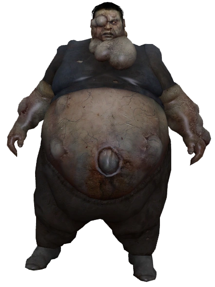
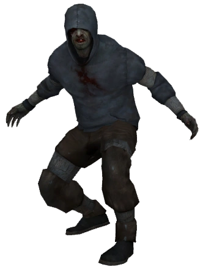
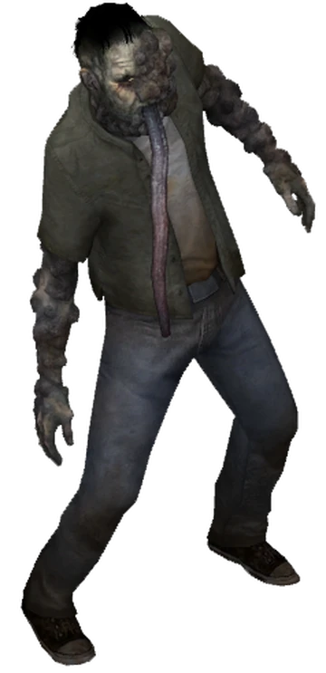
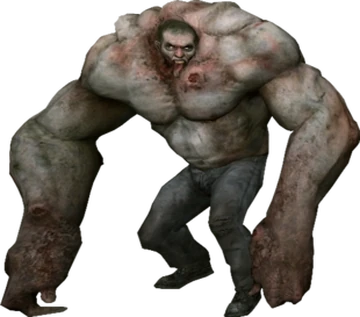
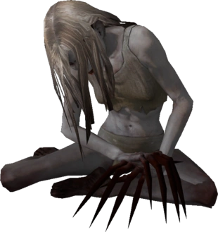

Infectados
Los infectados, también conocidos como caminantes o también conocidos por los militares como Whiskey Deltas o Mike Víctor en el doblaje español por usar el abecedario radiofónico, son las personas que fueron contagiadas por el virus de la Gripe verde, siendo el enemigo principal de los supervivientes durante las campañas.
Regresar a la página principal
- Infectados Comunes
- También llamados en general como "la horda", representan la gran mayoría de la población infectada y son los sujetos que no mutaron a causa del virus, teniendo como cambios la pérdida de su razonamiento y una agilidad sobrehumana que los hacen seres rabiosos y peligrosos.

- Infectados Especiales
Estos infectados no son muy numerosos, suele haber de 1 a 4 por cada oleada de infectados. Sin embargo, el peligro individual que representan es mayor al de un infectado común, pues se trata de un pequeño sector de la población contagiada que mutó a raíz del virus y recibieron habilidades especiales.
- Boomer
- Infectado obeso que puede lanzar su bilis sobre los supervivientes. Esta sustancia actúa como una feromona que atrae una gran cantidad de infectados hacia el sujeto impactado. Cuando muere, el boomer explota y expulsa bilis a sus alrededores, sin embargo, no puede impregnar a ningún infectado.

- Hunter
- Bastante rápido y ágil. Salta grandes alturas para impactar sobre las presas y así comenzar a atacarlas ya en el suelo, dejando a estas incapaces de defenderse. Es el único infectado que no hace ruido estando de pie, por lo que uno no puede escuchar sus gruñidos hasta que ya está listo para atacar.

- Smoker
- Un sujeto alto y delgado que atrapa con su larga lengua a sus víctimas para alejarlas del grupo y pudiendo llegar a asfixiarla. Cuando muere, deja una espesa cortina de humo que distorsiona la visión y que provoque que los supervivientes se pongan a toser, surgiendo así su nombre.

- Tank
- Un ser de gran masa muscular y resistencia. Es una bestia casi imparable que con su sola presencia hace temblar el suelo mientras se mueve como un homínido. Puede agarrar y empujar objetos pesados como parte de sus ataques y tumbar a un superviviente con unos cuantos golpes. La fuerza de sus puños hace volar a cualquiera que golpee, por lo que nunca hay que enfrentarlo solo.

- Witch
- De los más peligrosos en el juego y exclusivamente del género femenino. Es fácil percatarse de ella por su fuerte llanto y, a diferencia de los demás infectados, no ataca a los supervivientes a menos que se le acerquen, la ataquen, o la alumbren con la linterna. Acostumbra a quedarse en un lugar fio en la oscuridad, aunque al aire libre suele caminar sin rumbo. Con solo un golpe de sus largas garras incapacita al superviviente que la molestó y lo rasguña hasta matarlo.
